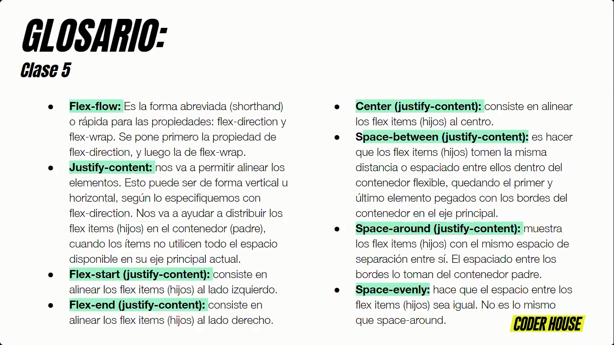
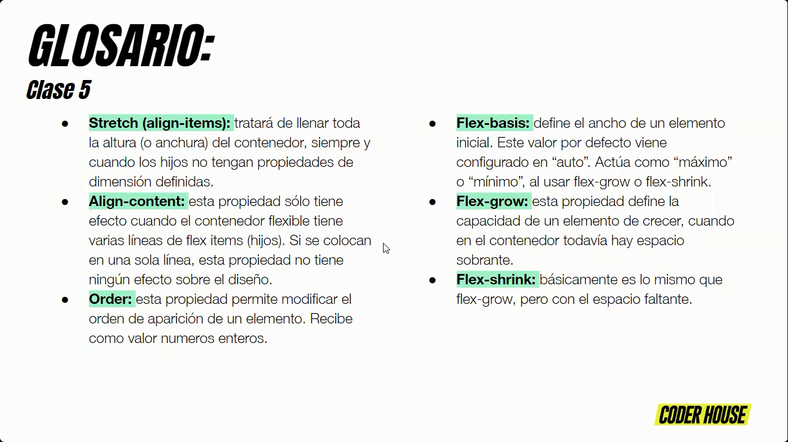
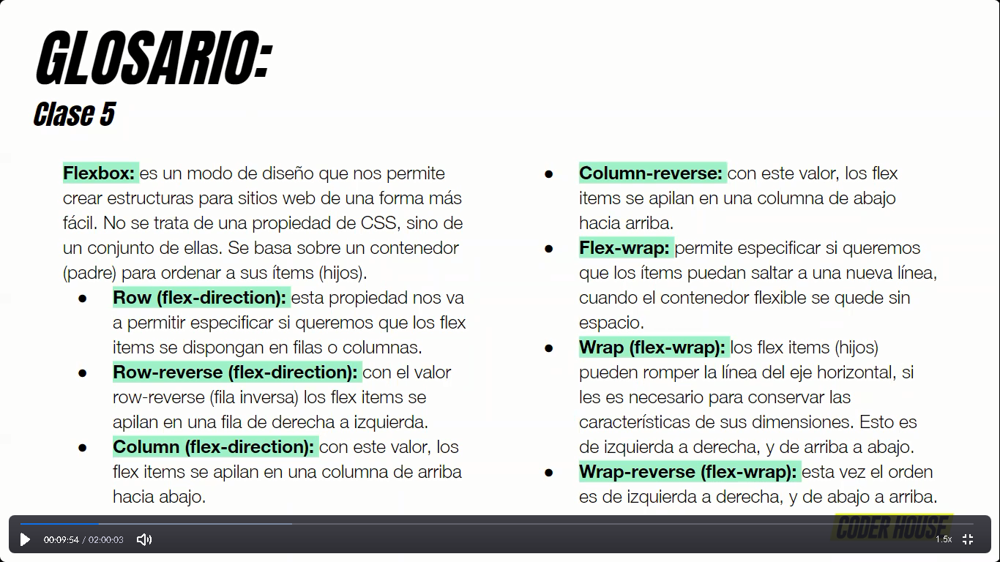

Inicio
segundo inicio
FLEXBOX2

Visiblemente cansado por el intenso arranque, el Xeneize cayó en Santiago del Estero y volvió a perder después de 10 partidos.

La racha de Battaglia se cortó en 10